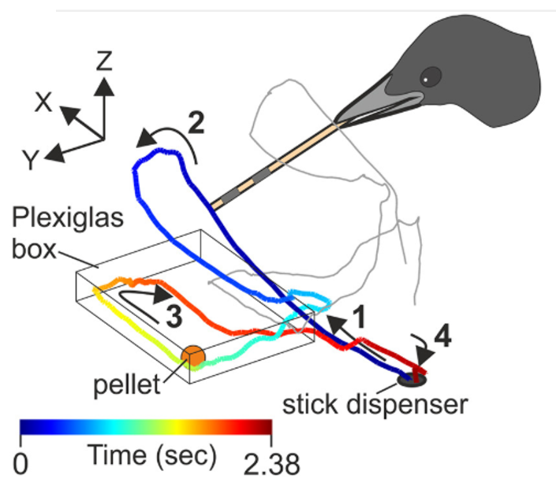
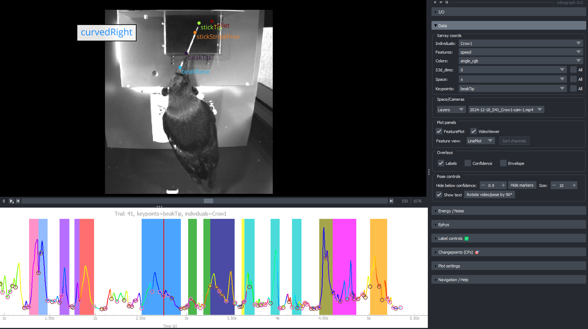

Tool-using crows - Moll et al., 2025#
Dataset includes behavioural data from 2 trials:
Videos published in Moll et al., 2025¹, see available online here. We recorded with two cameras (
cam-1,cam-2), but only video from left camera (cam-2) is shared.DeepLabCut² pose files generated for the videos of each camera and 3D pose file
*_DLC_3D.csvgenerated using 3D triangulation.Video features files (
_s3d.npy) generated using the Video Features repository³Trial_data.ncfile with behavioural features (kinematic, video features), changepoints, custom colours, and trial meta data.
Below is a example script how one can generate the Trial_data.nc file from the raw data.
¹ Moll, F. W., Würzler, J., & Nieder, A. (2025). Learned precision tool use in carrion crows. Current Biology, 35(19), 4845-4852.e3. https://doi.org/10.1016/j.cub.2025.08.033
² Nath, T., Mathis, A., Chen, A. C., Patel, A., Bethge, M., & Mathis, M. W. (2019). Using DeepLabCut for 3D markerless pose estimation across species and behaviors. Nature Protocols, 14(7), 2152–2176. https://doi.org/10.1038/s41596-019-0176-0
³ Iashin, V. (2020). Video Features [Computer software]. v-iashin/video_features
{kind=link}

{kind=link}

Left: Figure 1C from Moll et al., 2025¹
Right: Screenshot from GUI. Bottom line plot shows speed of beak tip.
File structure#
Moll2025/
├── labels/ # GUI saved label files
├── 2024-12-17_115_Crow1-cam-1.mp4 # video (trial 115)
├── 2024-12-17_115_Crow1-cam-1DLC.csv # 2D pose cam-1
├── 2024-12-17_115_Crow1-cam-2DLC.csv # 2D pose cam-2
├── 2024-12-17_115_Crow1_DLC_3D.csv # 3D triangulated pose
├── 2024-12-17_115_Crow1-cam-1_s3d.npy # Video features
├
├── 2024-12-18_041_Crow1-cam-1.mp4 # video (trial 41)
├── 2024-12-18_041_Crow1-cam-1DLC.csv # 2D pose cam-1
├── 2024-12-18_041_Crow1-cam-2DLC.csv # 2D pose cam-2
├── 2024-12-18_041_Crow1_DLC_3D.csv # 3D triangulated pose
├── 2024-12-18_041_Crow1-cam-1_s3d.npy # Video features
└── Trial_data.nc # all behavioural and meta data in one place
Filename convention#
2024-12-17_115_Crow1-cam-1DLC.csv
2024-12-17_115_Crow1-cam-1.mp4
│ │ │
│ │ └── bird ID
│ └────── trial number
└─────────────────── session date
Using a similar file convention across related files (video, 2D pose, 3D pose), makes it easier to match file names across trials using regex.
Download example data#
from pathlib import Path
from ethograph.utils.download import download_example_dataset
try:
_here = Path(__vsc_ipynb_file__).parent # VS Code
except NameError:
_here = Path().resolve() # Jupyter Lab / Notebook (CWD = notebook dir)
data_folder = _here.parent / "data" / "Moll2025"
download_example_dataset("moll2025", data_folder)
print(f"\ndata_folder: {data_folder}")
Downloading Trial_data.nc... (0/11)
Downloading Trial_data.nc... (1/11)
Downloading 2024-12-17_115_Crow1-cam-1.mp4... (1/11)
Downloading 2024-12-17_115_Crow1-cam-1.mp4... (2/11)
Downloading 2024-12-17_115_Crow1-cam-1DLC.csv... (2/11)
Downloading 2024-12-17_115_Crow1-cam-1DLC.csv... (3/11)
Downloading 2024-12-17_115_Crow1-cam-2DLC.csv... (3/11)
Downloading 2024-12-17_115_Crow1-cam-2DLC.csv... (4/11)
Downloading 2024-12-17_115_Crow1_DLC_3D.csv... (4/11)
Downloading 2024-12-17_115_Crow1_DLC_3D.csv... (5/11)
Downloading 2024-12-17_115_Crow1-cam-1_s3d.npy... (5/11)
Downloading 2024-12-17_115_Crow1-cam-1_s3d.npy... (6/11)
Downloading 2024-12-18_041_Crow1-cam-1.mp4... (6/11)
Downloading 2024-12-18_041_Crow1-cam-1.mp4... (7/11)
Downloading 2024-12-18_041_Crow1-cam-1DLC.csv... (7/11)
Downloading 2024-12-18_041_Crow1-cam-1DLC.csv... (8/11)
Downloading 2024-12-18_041_Crow1-cam-2DLC.csv... (8/11)
Downloading 2024-12-18_041_Crow1-cam-2DLC.csv... (9/11)
Downloading 2024-12-18_041_Crow1_DLC_3D.csv... (9/11)
Downloading 2024-12-18_041_Crow1_DLC_3D.csv... (10/11)
Downloading 2024-12-18_041_Crow1-cam-1_s3d.npy... (10/11)
2024-12-18_041_Crow1-cam-1_s3d.npy (11/11)
mapping: d:\Akseli\Code\ethograph\data\Moll2025\.ethograph\mapping.txt
data_folder: d:\Akseli\Code\ethograph\data\Moll2025
Build NWB alignment#
import re
import pandas as pd
import natsort
from pathlib import Path
from ethograph.io.nwb_alignment import align_media_per_trial
try:
_here = Path(__vsc_ipynb_file__).parent
except NameError:
_here = Path().resolve()
data_folder = _here.parent / "data" / "Moll2025"
fps = 200
# ─── 1. Discover media files ───
# Filename examples:
# 2024-12-17_115_Crow1-cam-1.mp4
# 2024-12-17_115_Crow1-cam-1DLC.csv
# 2024-12-17_115_Crow1_DLC_3D.csv
video_pattern = re.compile(r"_(?P<trial>\d+)_Crow1-cam-1\.mp4$")
pose_2d_pattern = re.compile(r"_(?P<trial>\d+)_Crow1-cam-1DLC\.csv$")
pose_3d_pattern = re.compile(r"_(?P<trial>\d+)_Crow1_DLC_3D\.csv$")
# cam-1 video — for visualization in the GUI
video_by_trial: dict[int, Path] = {}
for f in natsort.natsorted(data_folder.glob("*-cam-1.mp4")):
m = video_pattern.search(f.name)
if m:
video_by_trial[int(m["trial"])] = f
# 2D DLC cam-1 — for GUI pose overlay
pose_2d_by_trial: dict[int, Path] = {}
for f in natsort.natsorted(data_folder.glob("*-cam-1DLC.csv")):
m = pose_2d_pattern.search(f.name)
if m:
pose_2d_by_trial[int(m["trial"])] = f
# 3D DLC — used as pose source for kinematics
pose_3d_by_trial: dict[int, Path] = {}
for f in natsort.natsorted(data_folder.glob("*_DLC_3D.csv")):
m = pose_3d_pattern.search(f.name)
if m:
pose_3d_by_trial[int(m["trial"])] = f
# ─── 2. Build session table ───
_all_trials = sorted(set(video_by_trial) | set(pose_2d_by_trial) | set(pose_3d_by_trial))
session_table = pd.DataFrame({
"trial": _all_trials,
"video_cam-1": [str(video_by_trial.get(t) or "") for t in _all_trials],
"pose_2d": [str(pose_2d_by_trial.get(t) or "") for t in _all_trials],
"pose_3d": [str(pose_3d_by_trial.get(t) or "") for t in _all_trials], # Only needed for kinematics, not marker overlay.
})
session_table = session_table.loc[:, (session_table != "").any()]
print(session_table.to_string())
session_table_filt = session_table[["trial", "video_cam-1", "pose_2d"]]
# ─── 3. Build NWB alignment ───
nwb_path = data_folder / ".ethograph" / "alignment.nwb"
align_media_per_trial(
trial_table=session_table_filt,
stream_rates={"video": float(fps), "pose": float(fps)},
output_path=nwb_path,
pose_fps=float(fps),
)
trial video_cam-1 pose_2d pose_3d
0 41 d:\Akseli\Code\ethograph\data\Moll2025\2024-12-18_041_Crow1-cam-1.mp4 d:\Akseli\Code\ethograph\data\Moll2025\2024-12-18_041_Crow1-cam-1DLC.csv d:\Akseli\Code\ethograph\data\Moll2025\2024-12-18_041_Crow1_DLC_3D.csv
1 115 d:\Akseli\Code\ethograph\data\Moll2025\2024-12-17_115_Crow1-cam-1.mp4 d:\Akseli\Code\ethograph\data\Moll2025\2024-12-17_115_Crow1-cam-1DLC.csv d:\Akseli\Code\ethograph\data\Moll2025\2024-12-17_115_Crow1_DLC_3D.csv
root (NWBFile)
session_start_time
2026-04-14 18:35:23.440187+02:00timestamps_reference_time
2026-04-14 18:35:23.440187+02:00file_create_date
0
2026-04-14 18:35:23.440187+02:00trials (TimeIntervals)
table
| start_time | stop_time | trial | video_cam-1 | pose_2d | |
|---|---|---|---|---|---|
| id | |||||
| 0 | 0.000 | 5.385 | 41 | d:\Akseli\Code\ethograph\data\Moll2025\2024-12-18_041_Crow1-cam-1.mp4 | d:\Akseli\Code\ethograph\data\Moll2025\2024-12-18_041_Crow1-cam-1DLC.csv |
| 1 | 5.385 | 11.230 | 115 | d:\Akseli\Code\ethograph\data\Moll2025\2024-12-17_115_Crow1-cam-1.mp4 | d:\Akseli\Code\ethograph\data\Moll2025\2024-12-17_115_Crow1-cam-1DLC.csv |
devices
cam-1 (Device)
2d (Device)
acquisition
video_cam-1 (ImageSeries)
data
| Data type | uint8 |
|---|---|
| Shape | (0, 0, 0) |
| Array size | 0.00 bytes |
[]
timestamps
| Data type | float64 |
|---|---|
| Shape | (2246,) |
| Array size | 17.55 KiB |
external_file
starting_frame
| Data type | int32 |
|---|---|
| Shape | (2,) |
| Array size | 8.00 bytes |
[ 0 1077]
pose_2d (ImageSeries)
data
| Data type | uint8 |
|---|---|
| Shape | (0, 0, 0) |
| Array size | 0.00 bytes |
[]
timestamps
| Data type | float64 |
|---|---|
| Shape | (2246,) |
| Array size | 17.55 KiB |
external_file
starting_frame
| Data type | int32 |
|---|---|
| Shape | (2,) |
| Array size | 8.00 bytes |
[ 0 1077]
analysis
scratch
processing
stimulus
stimulus_template
lab_meta_data
device_models
electrode_groups
icephys_electrodes
ogen_sites
imaging_planes
intervals
Create dataset#
import warnings
import numpy as np
import xarray as xr
from movement.io import load_poses
from movement.kinematics import compute_pairwise_distances, compute_velocity, compute_acceleration
from movement.utils.vector import compute_norm
import ethograph as eto
from ethograph.features.movement import compute_distance_to_constant, Position3DCalibration
from ethograph.features.changepoints import find_troughs_binary, find_nearest_turning_points_binary
from ethograph.features.preprocessing import gaussian_smoothing
warnings.filterwarnings(
"ignore",
message="Confidence array was not provided.Setting to an array of NaNs",
module="movement.validators.datasets",
)
clip_distance = 50 # exclude unrealistic distances (> 50 cm)
smoothing_params = {"sigma": 1.5, "axis": 0, "mode": "constant", "cval": np.nan}
# Subset of S3D video features with high Cohen's D for a label (Crow 1)
good_s3d_feats = [326, 327, 292, 363, 219, 192, 260, 66, 332, 199,
288, 763, 837, 182, 24, 218, 213, 21, 733, 242]
# Stationary locations
disp_xyz = [-10.23, -5.907, -1.395]
ds_list = []
for _, row in session_table.iterrows():
trial = row["trial"]
dlc_3d_path = row["pose_3d"]
ds = load_poses.from_dlc_file(dlc_3d_path, fps=fps)
ds = ds.assign_coords(individuals=["Crow1"])
ds.attrs["trial"] = trial
# 3D calibration
calibration = Position3DCalibration()
ds = calibration.transform(ds)
# Kinematics
ds["position"] = gaussian_smoothing(ds.position, **smoothing_params)
ds["velocity"] = compute_velocity(
ds.position.sel(keypoints=["stickTip", "beakTip"])
).clip(min=-150, max=150)
ds["speed"] = compute_norm(ds.velocity.sel(keypoints=["stickTip", "beakTip"]))
smooth_2x = {**smoothing_params, "sigma": smoothing_params["sigma"] * 2}
ds["acceleration"] = compute_acceleration(
gaussian_smoothing(ds.position, **smooth_2x).sel(keypoints=["stickTip", "beakTip"])
).clip(min=-1500, max=1500)
# Distance features
ds["pellet_beakTip_dist"] = compute_pairwise_distances(
ds.position, "keypoints", {"pellet": "beakTip"}
).clip(0, clip_distance)
ds["pellet_stickTip_dist"] = compute_pairwise_distances(
ds.position, "keypoints", {"pellet": "stickTip"}
).clip(0, clip_distance)
ds["disp_beakTip_dist"] = compute_distance_to_constant(
ds.position, reference_point=disp_xyz, keypoint="beakTip"
).clip(0, clip_distance)
ds["disp_stickTip_dist"] = compute_distance_to_constant(
ds.position, reference_point=disp_xyz, keypoint="stickTip"
).clip(0, clip_distance)
# Keep subset of keypoints
ds = ds.sel(keypoints=["beakTip", "stickTip", "pellet"])
# Video features (S3D)
s3d_path = data_folder / (Path(dlc_3d_path).name.replace("_DLC_3D.csv", "-cam-1_s3d.npy"))
if s3d_path.exists():
s3d_data = np.load(s3d_path)
ds["s3d"] = (("time", "s3d_dims"), s3d_data[:, good_s3d_feats])
# Changepoints
ds = eto.add_changepoints_to_ds(
ds=ds, target_feature="speed", changepoint_name="troughs",
changepoint_func=find_troughs_binary, prominence=0.5, distance=2,
)
ds = eto.add_changepoints_to_ds(
ds=ds, target_feature="speed", changepoint_name="turning_points",
changepoint_func=find_nearest_turning_points_binary,
threshold=1.0, max_value=50, prominence=5, width=2,
)
# Colour for line plots
ds = eto.add_angle_rgb_to_ds(ds, smoothing_params=smoothing_params)
# Trial metadata
if int(trial) == 41:
ds.attrs["pellet_position"] = "right"
elif int(trial) == 115:
ds.attrs["pellet_position"] = "left"
ds_list.append(ds)
dt = eto.from_datasets(ds_list)
dt.save(data_folder / "Trial_data.nc")
print(f"Saved to {data_folder / 'Trial_data.nc'}")
Saved to d:\Akseli\Code\ethograph\data\Moll2025\Trial_data.nc